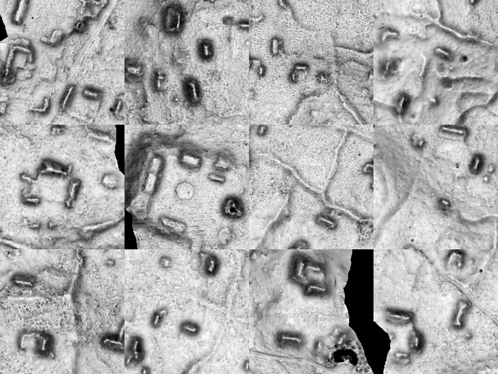

Rilevatore
Chactún: 76,4% di 942 strutture annotate ritrovate l'83,0% di 677 segnalazioni cade su una struttura Rovine dense; altrove non misurato.
Sintesi
456 transetti1.272,7 km²11.916 complessi candidatiStrisce campionarie, non copertura della penisola.
Chactún: 76,4% di 942 strutture annotate ritrovate l'83,0% di 677 segnalazioni cade su una struttura Rovine dense; altrove non misurato.
WorldCover 2021: 150 costruito, 34 coltivato, 11.732 senza uso evidente. Conteggi non verificati a vista; «costruito oggi» non esclude resti antichi.
40 rivisti: 15 reggono, 25 incerti; 11.876 da rivedere. Un blocco; 3 dei primi 100 per punteggio rivisti.

La presenza in altri cataloghi non è stata verificata.
Richiesta: valutazione indipendente del metodo.
Questo rilievo è già stato analizzato da altri gruppi (Estrada-Belli et al. 2025; Britton 2026, con un catalogo di 57.181 strutture non ancora pubblico). Ogni candidato si presume già noto finché un confronto non mostra il contrario.
Nessun candidato è stato verificato sul campo. Non si afferma nulla sull'età, sulla cultura o sulla funzione di alcun candidato.
La revisione è stata fatta da agenti AI dello stesso modello. Sui riquadri di controllo hanno riconosciuto 3–4 edifici noti su 10 e non hanno indicato come struttura nessuno dei 10 riquadri vuoti. Per questo il loro giudizio vale per confermare, non per scartare.
Le posizioni dei candidati non sono in questo documento, per non esporre i luoghi al saccheggio.
Analisi e testi prodotti da assistenti AI (Claude, GPT) con la supervisione di Mirko Tornani, [qualifica: la scrive l'operatore].
Contatti: [da inserire dall'operatore].
Summary
456 transects1,272.7 km²11,916 candidate complexesSample strips, not full-peninsula coverage.
Chactún test: 76.4% of 942 annotated structures found 83.0% of 677 flags matched one Dense ruins; elsewhere unmeasured.
WorldCover 2021: 150 built, 34 cultivated, 11,732 with no obvious use. Not visually checked; built today does not rule out ancient remains.
40 reviewed: 15 hold up, 25 uncertain; 11,876 not yet reviewed. One block; 3 of the top 100 reviewed.
Catalogue overlap has not been checked.
Request: independent method assessment.
This lidar survey has already been analysed by other teams (Estrada-Belli et al. 2025; Britton 2026, with a catalogue of 57,181 structures that is not yet public). Every candidate is presumed already known unless a comparison shows otherwise.
No candidate has been verified in the field. No claim is made about the age, culture or function of any candidate.
The review was carried out by AI agents of the same model. On control tiles they recognised 3–4 of 10 known buildings and flagged none of the 10 empty tiles as a structure. Their judgement is therefore used to confirm, not to rule out.
Candidate locations are not included in this document, to avoid exposing the places to looting.
Analysis and text were produced by AI assistants (Claude, GPT) under the supervision of Mirko Tornani, [role: to be filled in by the operator].
Contact: [to be completed by the operator].
Resumen
456 transectos1.272,7 km²11.916 complejos candidatosFranjas parciales.
Chactún: 942 estructuras anotadas; 76,4 % recuperadas 83,0 % de 677 señales coincide Ruinas densas; otros terrenos no medidos.
WorldCover 2021: 150 construidos, 34 cultivados, 11.732 sin uso evidente. Sin revisión visual; construido hoy no descarta antigüedad.
40 revisados: 15 se sostienen, 25 inciertos; 11.876 sin revisar. Un bloque; 3 de los primeros 100 revisados.
No se comprobó su presencia en otros catálogos.
Solicitud: evaluación independiente del método.
Este levantamiento lidar ya ha sido analizado por otros equipos (Estrada-Belli et al. 2025; Britton 2026, con un catálogo de 57.181 estructuras aún no público). Todo candidato se presume ya conocido mientras una comparación no muestre lo contrario.
Ningún candidato ha sido verificado en campo. No se afirma nada sobre la edad, la cultura o la función de ningún candidato.
La revisión fue realizada por agentes de IA del mismo modelo. En los recuadros de control reconocieron 3–4 de 10 edificios conocidos y no señalaron como estructura ninguno de los 10 recuadros vacíos. Por eso su juicio sirve para sostener un candidato, no para excluirlo.
Las ubicaciones de los candidatos no figuran en este documento, para no exponer los lugares al saqueo.
El análisis y los textos fueron producidos por asistentes de IA (Claude, GPT) bajo la supervisión de Mirko Tornani, [función: la completa el operador].
Contacto: [lo completa el operador].